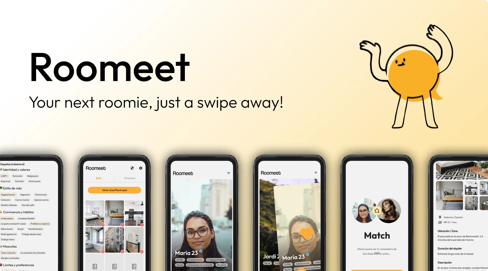
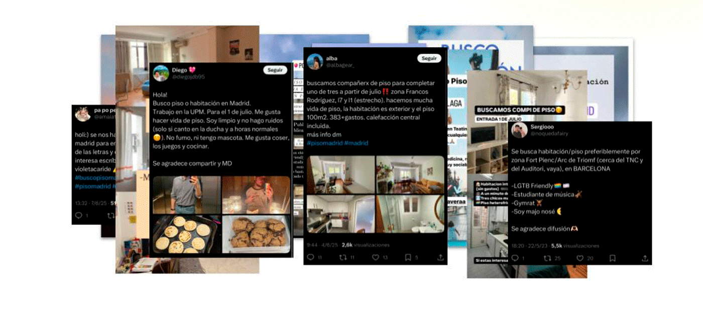
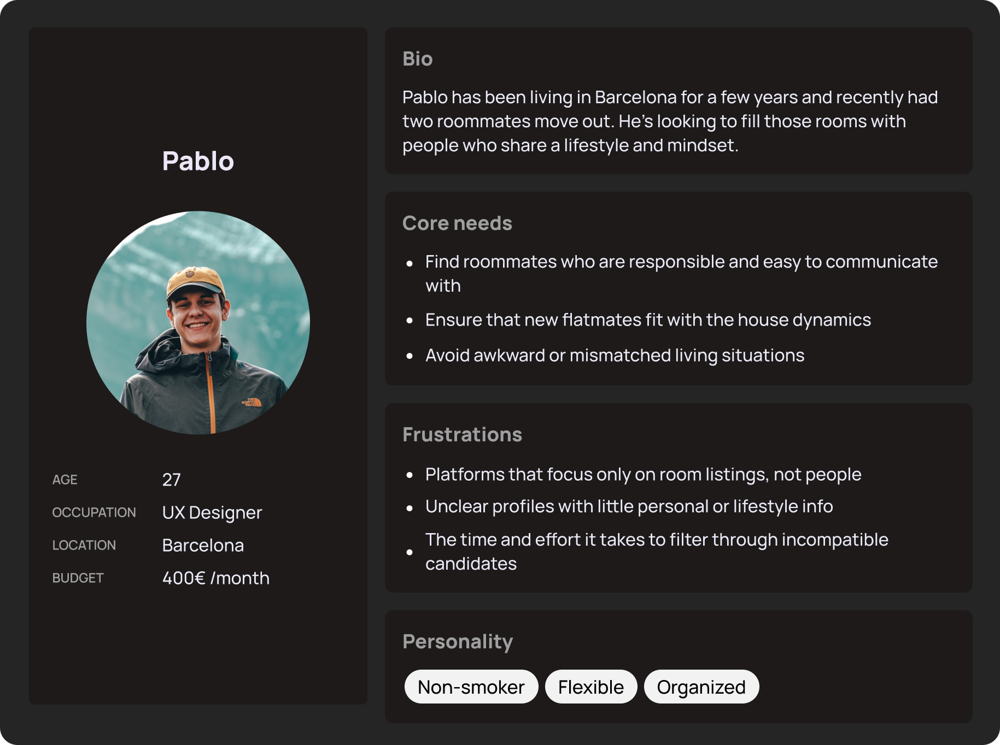
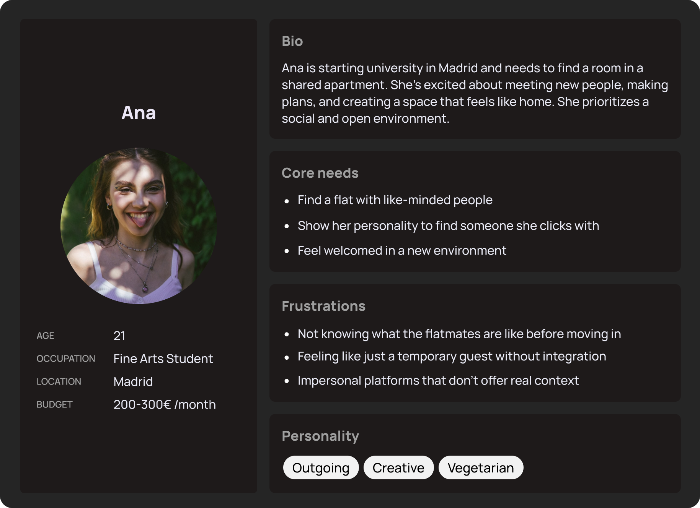
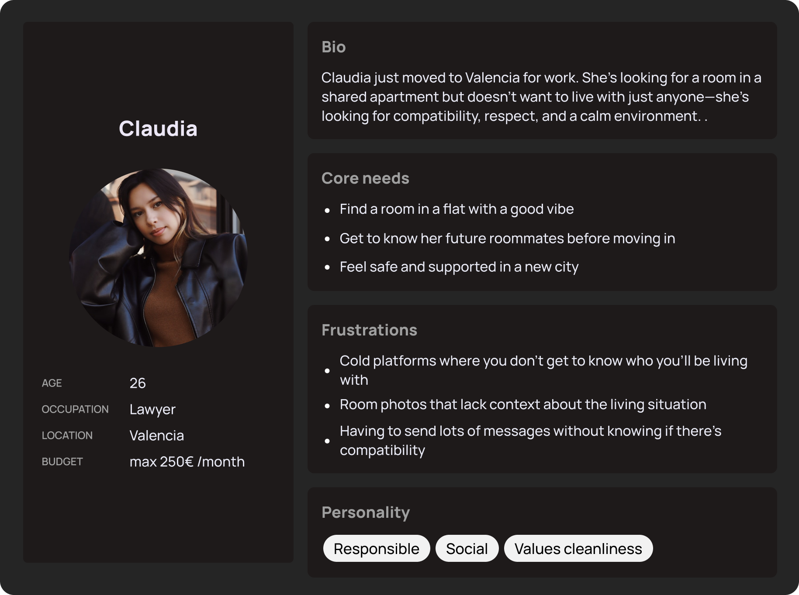
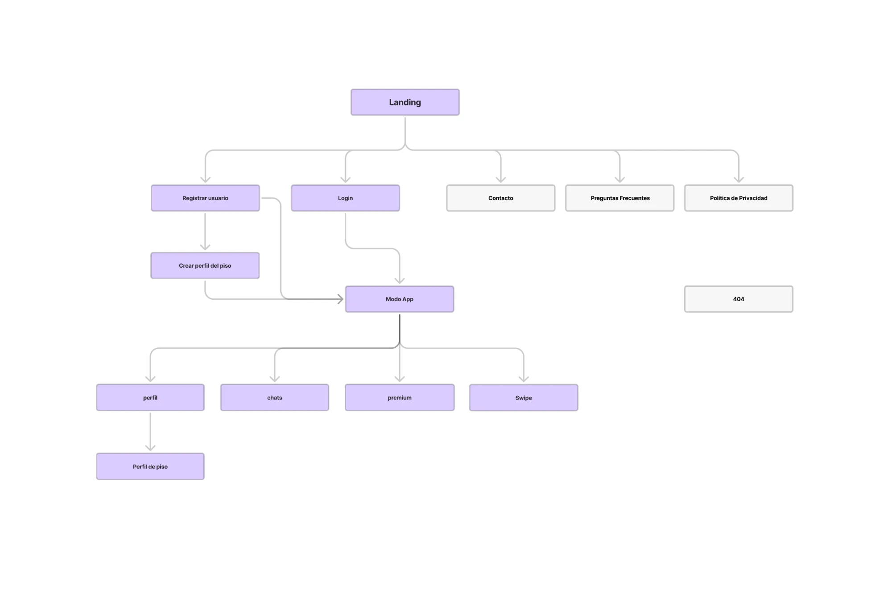
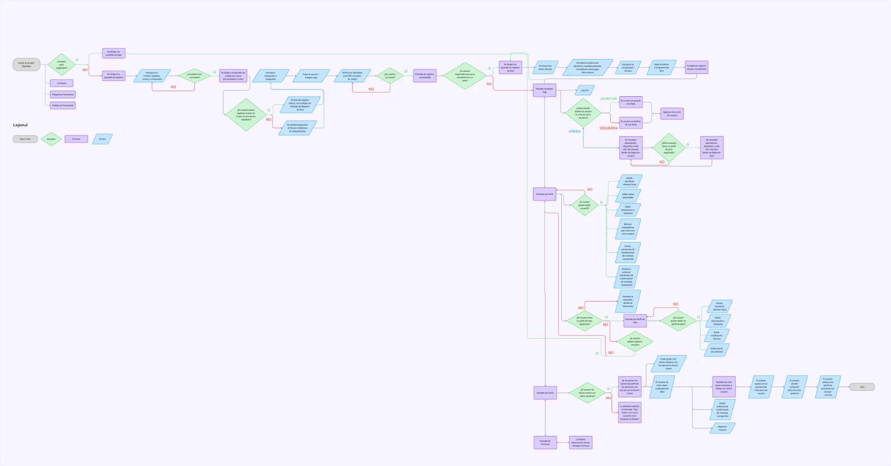
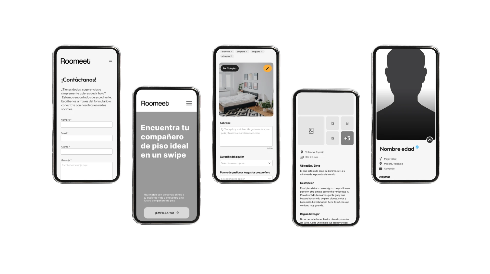
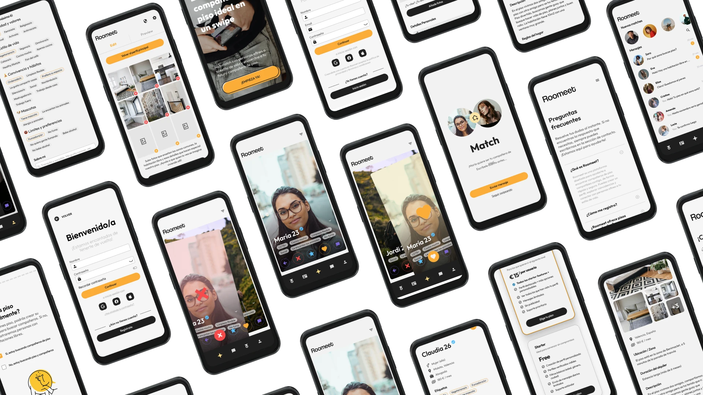
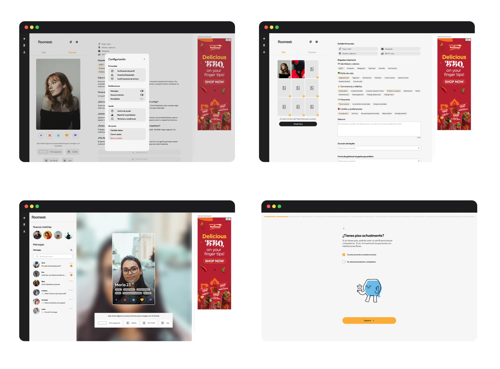

Una plataforma de dos lados que conecta inquilinos y anfitriones por compatibilidad personal —hábitos, estilo de vida y valores— en vez de limitarse a anunciar habitaciones libres, aplicando al co-living la mecánica de swipe de las apps de citas.

Compartir piso es cada vez más habitual entre la gente joven, pero encontrar a alguien compatible es frustrante y caótico. Plataformas como Badi o Idealista se centran en el piso, no en las personas — así que la mayoría acaba recurriendo a Instagram Stories o Twitter para buscar compañero de piso: un proceso informal, ineficiente y sin ningún filtro real de compatibilidad.
Al investigar, vi que en realidad había dos problemas distintos escondidos en uno: el inquilino busca una habitación y una persona con la que encajar; el anfitrión busca a alguien que encaje con la dinámica de su piso. Ninguna plataforma resolvía los dos lados con la misma experiencia — ahí estaba el hueco: nadie había aplicado la mecánica de swipe, tan familiar por las apps de citas, al co-living con filtros reales de estilo de vida.
También decidí construir Roomeet sobre unos valores de producto claros: inclusión e interseccionalidad, rechazo explícito a la especulación inmobiliaria, registro solo para particulares (inmobiliarias y especuladores bloqueados) y un sistema de denuncia comunitaria.

Fui responsable del diseño end-to-end del proyecto: research, personas, arquitectura, flujos, wireframes de baja y alta fidelidad, diseño final y el Design System completo. Trabajé en equipo con Javi, que se encargó del desarrollo en React y de las ilustraciones de los personajes geométricos, y Noah, que dio apoyo al equipo — y colaboré de cerca con Javi para que el Design System fuera directamente traducible a código.
A partir de ese research construimos tres personas para guiar el diseño:



El objetivo quedó claro tras el research: conectar personas compatibles, no solo pisos. La decisión de diseño más importante del proyecto salió de aquí: separar los flujos de inquilino y anfitrión desde el propio onboarding, porque buscan cosas distintas — mezclarlos habría generado confusión, aunque hubiera simplificado el desarrollo.
Mapeé el sitemap completo del producto: Landing, flujo de registro y "Modo App" (una vez dentro), que incluye Swipe, Chats, Perfil, Galería y Premium.

Mapeé el flujo completo en Figma, desde el primer acceso hasta el match y la conversación. Esto permitió detectar puntos de fricción antes de construir nada: un onboarding demasiado largo, el momento de decidir el plan premium, y la gestión de varios matches a la vez.

Clic sobre el diagrama para verlo a tamaño completo.
Los wireframes de baja fidelidad los construimos entre los tres, aportando ideas conjuntas; la alta fidelidad fue responsabilidad mía. Las pantallas de swipe pasaron por varios rediseños para adaptarlas a desktop — la app se pensó mobile-first, pero tenía que funcionar bien también en pantalla grande, y ese fue el mayor reto de adaptación: apenas hay referentes de swipe fuera de mobile.

El color principal es un amarillo (#FBAD37) amigable, enérgico y joven. Javi ilustró los personajes geométricos de la marca, donde cada forma representa una personalidad distinta, para dar un tono cercano y nada corporativo. La app es mobile-first con una versión desktop adaptada, y el modelo de monetización combina plan freemium con publicidad dentro de la app.
Construí el Design System con la filosofía de Atomic Design, pensando los componentes para que fueran directamente aplicables a código React — facilitar el trabajo de Javi como desarrollador fue una decisión de diseño consciente, no un añadido posterior.
Componentes principales (Atomic Design): botones (primary, secondary, ghost, disabled), inputs con estados de error, tags de estilo de vida seleccionables, swipe cards, botones de acción de swipe (like, dislike, superlike, favorito), lista de chat y burbujas, barra de navegación mobile, tarjetas de perfil (inquilino y anfitrión), tarjetas de plan (Free vs. Premium), modales, alerts y elementos de formulario. No hay dark mode: el producto es 100% light.
¿Tienes piso? → flujo anfitrión (perfil de piso + habitación). ¿No tienes piso? → flujo inquilino (preferencias y estilo de vida). Preguntas adaptadas a cada rol.
Card con foto, nombre, edad y etiquetas de personalidad. Al hacer click se abre el perfil completo con descripción y fotos del piso. Like / Dislike / Superlike / Favorito. Match → acceso al chat.
Lista de matches y conversación. Solo puedes chatear con tus matches. Diseño limpio, legible tanto en mobile como en desktop.
Free: funcionalidad básica. Premium: más likes, ver quién te ha dado like y filtros avanzados. Monetización adicional con publicidad dentro de la app.
Perfil personal (quién eres) y, si eres anfitrión, perfil de piso (fotos, normas, habitación), con toggle de edición y vista previa.
Registro solo para particulares, con preguntas que filtran inmobiliarias, y un sistema de denuncia comunitaria.
Grid de todas las pantallas mobile del producto terminado:

Versión desktop adaptada:

Detalle de las dos interacciones clave del producto:
Separar por completo el onboarding de inquilino y anfitrión desde el primer paso, con preguntas distintas para cada rol.
Inquilino y anfitrión buscan cosas distintas — mezclar los flujos habría generado confusión en el momento más crítico del producto: el primer contacto con la app.
Un único flujo genérico: más simple de desarrollar, pero descartado porque diluía la propuesta de valor para ambos lados.
Rediseñar la mecánica de swipe específicamente para pantallas grandes, en lugar de escalar directamente el layout mobile.
La app es mobile-first, pero necesitaba funcionar en desktop. Apenas existen referencias de swipe fuera de mobile, así que hubo que replantear la interacción, no solo el tamaño.
Escalar el mismo layout mobile a una pantalla más grande: descartada tras varias pruebas por no resultar natural con ratón y teclado.
Construir los componentes de Figma con Atomic Design, estructurados para que fueran directamente traducibles a componentes de código.
Reduce la fricción en el handoff con Javi y acelera el desarrollo, al no tener que reinterpretar la estructura del diseño en código.
Diseñar sin pensar en la implementación y dejar la traducción a código enteramente en manos del desarrollador: habría generado más idas y vueltas.
Diseño: Figma · Adobe Illustrator · Procreate.
Desarrollo: React.js · HTML · SASS · CSS.
El prototipo en React cubre el flujo principal de usuario y demuestra la viabilidad técnica del producto. No llegó a producción por el tiempo limitado del TFM (4 meses en equipo de 3), pero el Design System construido con Atomic Design dejó el terreno preparado para escalarlo.